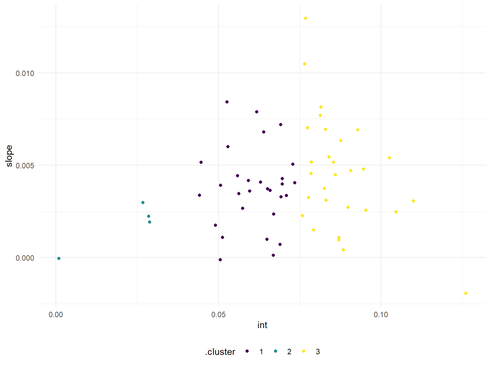
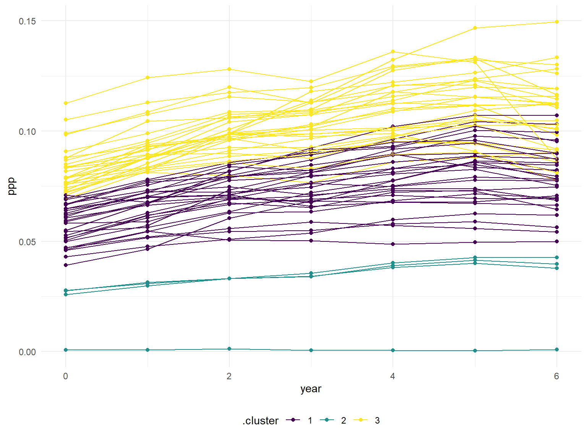

final_project_jsg
Jared Garfinkel
11/29/2019
opioid_death_data = read_csv('./opioid_related_deaths.csv') %>%
janitor::clean_names()## Parsed with column specification:
## cols(
## Year = col_double(),
## County = col_character(),
## `Opioid Poisoning Deaths` = col_double()
## )opioid_er_data = read_csv('./opioid_related_visits.csv') %>%
janitor::clean_names()## Parsed with column specification:
## cols(
## .default = col_double(),
## `Patient County Name` = col_character(),
## `Rural/Urban` = col_character(),
## Payer = col_character()
## )## See spec(...) for full column specifications.opioid_treatment_distance = read_csv('./distance_to_treatment.csv') %>%
janitor::clean_names()## Parsed with column specification:
## cols(
## STATEFP = col_character(),
## COUNTYFP = col_character(),
## YEAR = col_double(),
## INDICATOR = col_character(),
## VALUE = col_double(),
## STATE = col_character(),
## STATEABBREVIATION = col_character(),
## COUNTY = col_character()
## )prod_county = arcos::summarized_county_annual(state = "NY", key = "WaPo") %>%
janitor::clean_names()
county_pop = arcos::county_population(state = "NY", key = "WaPo") %>%
janitor::clean_names()# clean opioid death data #
opioid_death_data = opioid_death_data %>%
filter(year >= 2010)
# clean opioid er data #
opioid_er_data = opioid_er_data %>%
select(year, patient_county_name, rural_urban, payer, er_opioid, inpatient_total_opioid, er_inpatient_total_opioid, outpatient_opioid, overall_opioid) %>%
rename(county = patient_county_name)
# clean opioid treatment data #
# data is only for the year 2017#
opioid_treatment_distance %>%
filter(state == 'New York') %>%
select(state, county, value) %>%
rename(distance = value) ## # A tibble: 62 x 3
## state county distance
## <chr> <chr> <dbl>
## 1 New York Albany County 5.97
## 2 New York Allegany County 14.6
## 3 New York Bronx County 0.32
## 4 New York Broome County 7.96
## 5 New York Cattaraugus County 9.86
## 6 New York Cayuga County 11.9
## 7 New York Chautauqua County 8.15
## 8 New York Chemung County 6.53
## 9 New York Chenango County 11.6
## 10 New York Clinton County 14.4
## # ... with 52 more rows# Combine Data Sets #
opioid_total_data = left_join(opioid_er_data, opioid_death_data, by = c('county', 'year')) %>%
arrange(county, year) %>%
mutate(county = recode(county, "Kings (Brooklyn)" = "Kings",
"New York (Manhattan)" = "New York"))
opioid_total_data %>% arrange(year, county) %>% print()## # A tibble: 1,950 x 10
## year county rural_urban payer er_opioid inpatient_total~
## <dbl> <chr> <chr> <chr> <dbl> <dbl>
## 1 2010 Albany Urban Medi~ 13 14
## 2 2010 Albany Urban Other 0 1
## 3 2010 Albany Urban Medi~ 20 11
## 4 2010 Albany Urban Comm~ 20 9
## 5 2010 Albany Urban Unkn~ 8 0
## 6 2010 Alleg~ Rural Medi~ 0 3
## 7 2010 Alleg~ Rural Other 1 0
## 8 2010 Alleg~ Rural Comm~ 1 5
## 9 2010 Alleg~ Rural Medi~ 0 4
## 10 2010 Alleg~ Rural Unkn~ 2 0
## # ... with 1,940 more rows, and 4 more variables:
## # er_inpatient_total_opioid <dbl>, outpatient_opioid <dbl>,
## # overall_opioid <dbl>, opioid_poisoning_deaths <dbl># Number of Perscription Opioids by County #
prod_county %>%
group_by(buyer_county,year) %>%
summarize(numpills = sum(count)) %>%
arrange(desc(numpills))## # A tibble: 434 x 3
## # Groups: buyer_county [62]
## buyer_county year numpills
## <chr> <int> <int>
## 1 SUFFOLK 2011 134486
## 2 SUFFOLK 2010 132513
## 3 SUFFOLK 2008 126750
## 4 SUFFOLK 2009 125565
## 5 SUFFOLK 2012 121018
## 6 SUFFOLK 2007 120391
## 7 ERIE 2011 110324
## 8 SUFFOLK 2006 109774
## 9 ERIE 2012 109624
## 10 ERIE 2010 106673
## # ... with 424 more rows# Pills bought by Pharmacies in Each county per Year #
pharma_df = left_join(prod_county, county_pop, by = c("buyer_county", "year")) %>%
select(county_name, year, count, population) %>%
rename(county = county_name,
pills_bought = count) %>%
mutate(
year = recode(year,
"2006" = 0,
"2007" = 1,
"2008" = 2,
"2009" = 3,
"2010" = 4,
"2011" = 5,
"2012" = 6)
) %>%
group_by(county, year) %>%
summarize(ppp = pills_bought/population)pharma_df %>%
ggplot(aes(x = year, y = ppp, color = county)) +
geom_point() +
geom_line(se = FALSE) +
theme(legend.position = "none")
int_slope_df <- pharma_df %>%
nest(data = year:ppp) %>%
mutate(
models = map(data, ~lm(ppp ~ year, data = .x)),
result = map(models, broom::tidy)
) %>%
select(county, result) %>%
unnest(result) %>%
select(county, term, estimate) %>%
pivot_wider(
names_from = term,
values_from = estimate
) %>%
rename(int = "(Intercept)", slope = year)int_slope_df %>%
ggplot(aes(x = slope, y = int)) +
geom_point() +
theme(legend.position = "none")
km_fit =
kmeans(
int_slope_df[,c(2,3)],
centers = 3)
int_slope_df =
broom::augment(km_fit, int_slope_df)int_slope_df %>%
ggplot(aes(x = int, y = slope, color = .cluster)) +
geom_point()
left_join(pharma_df, int_slope_df) %>%
ggplot(aes(x = year, y = ppp, group = county, color = .cluster)) +
geom_point() +
geom_path() ## Joining, by = "county"